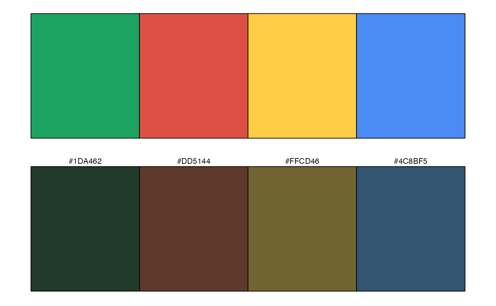
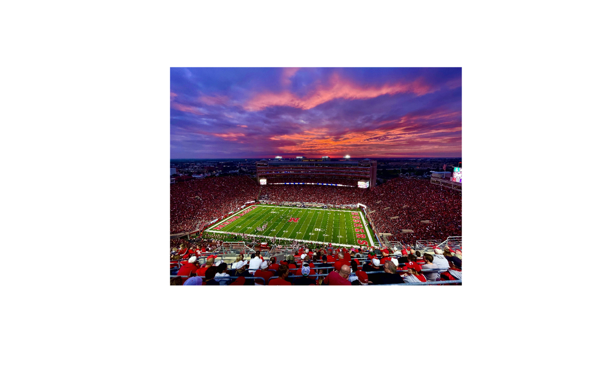
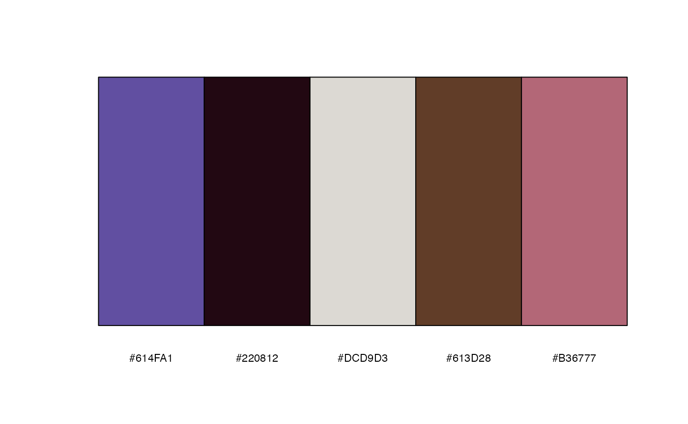
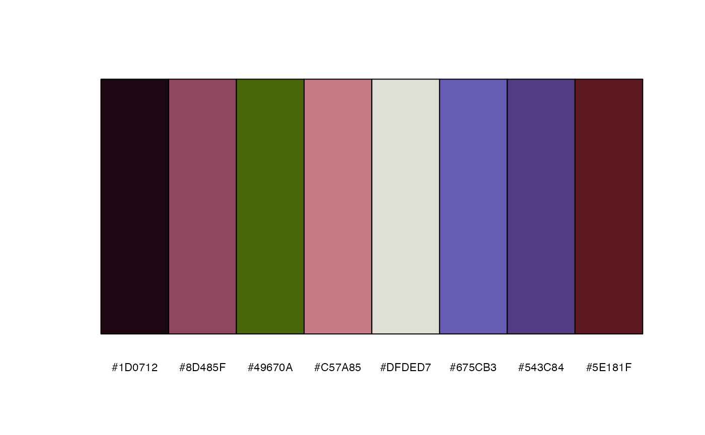
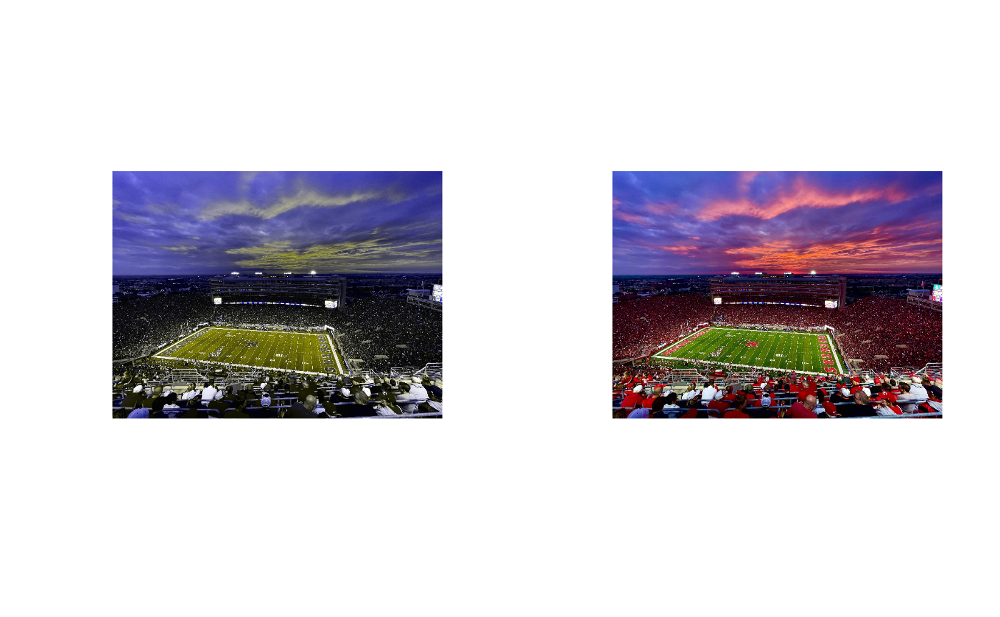
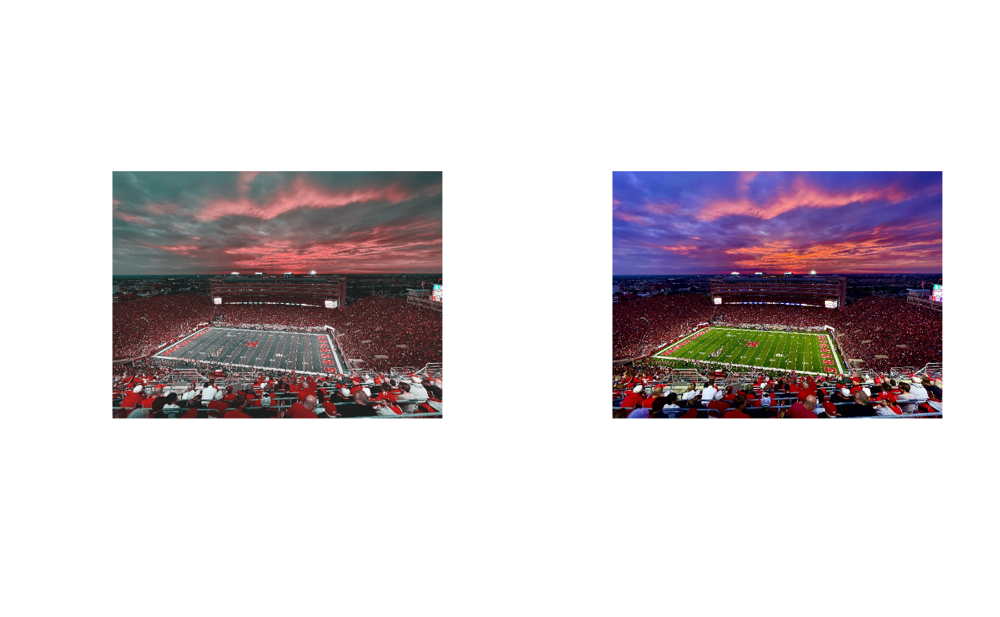
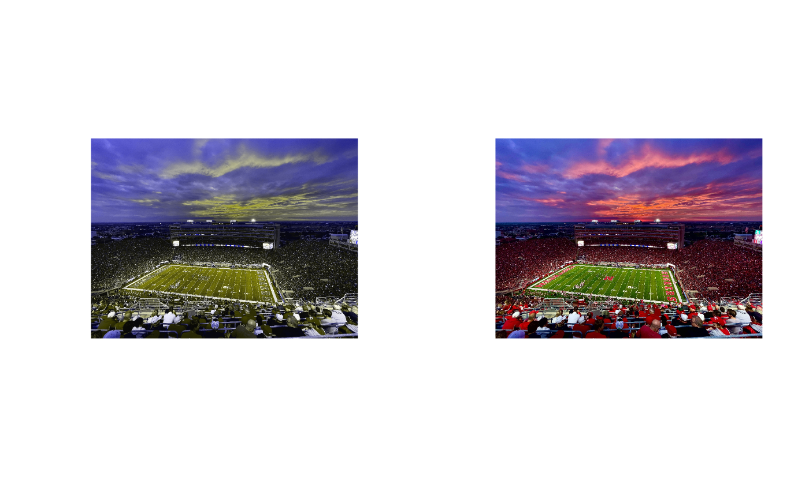
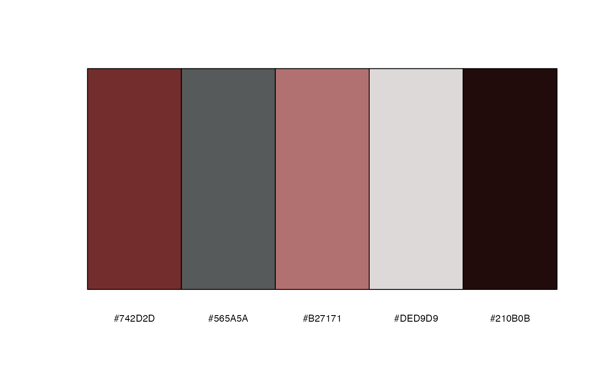

Photopal
Photopal.Rmd
library(Photopal)Introduction
Photopal is a package that aims to generate color palettes from given images. This concept is commonly used in commercial applications. For example, anyone has used Chrome, a popular web browser, should be able to recognize the color palette that represents Chrome from the two examples below.

We have developed Photopal with a similar purpose, which is to extract colors from user-specified images, whether they are from the internet or the user’s computer.
Data
Photopal has a internal data set, stadium, for
demonstration purposes. But users can use their own image by providing a
valid url or a local directory. We will demonstrate this in the
following part.
Palette Create
Photopal comes with an internal data set called ‘stadium’ for demonstration purposes. However, users can also utilize their own images by providing a valid URL or a local directory. We will illustrate this in the following sections.
Read an image
The RGB color model is a conventional color model used to represent colors using three additive primary colors: red, green, and blue. This is also the initial approach that Photopal uses to read images, where every provided image is read as a 4-dimensional tensor, with dimensions for row number, column number, depth (which is always set to 1 as we don’t have a 3D image), and RGB values. Since only RGB values are needed to create a color palette, a function is required to return an RGB dataframe.
The image2rgb function takes an image from the user and
returns an RGB dataframe, which is then utilized to create a color
palette.
The image2rgb function can be called without image
location arguments, as it will load the internal image from Photopal.
This is used for most of the demonstrations to address copyright
concerns.
df.rgb = image2rgb()
head(df.rgb)
#> red green blue
#> 1 0.2784314 0.3529412 0.8156863
#> 2 0.2862745 0.3647059 0.8156863
#> 3 0.2862745 0.3647059 0.8156863
#> 4 0.2941176 0.3725490 0.8156863
#> 5 0.2980392 0.3764706 0.8196078
#> 6 0.2941176 0.3725490 0.8156863It’s able to input an image from a website too
birddf = image2rgb("https://upload.wikimedia.org/wikipedia/commons/2/2a/Hummingbird.jpg")
head(birddf)
#> red green blue
#> 1 0.1803922 0.4705882 0.12156863
#> 2 0.1803922 0.4745098 0.10980392
#> 3 0.1803922 0.4705882 0.09019608
#> 4 0.1882353 0.4705882 0.08235294
#> 5 0.1882353 0.4705882 0.07843137
#> 6 0.1960784 0.4705882 0.08627451User can also do this with a local saved picture.
cardf <- image2rgb("/Users/huamuxin/Documents/ISU_stat_585/Left.jpeg")
head(cardf)
#> red green blue
#> 1 0.7215686 0.8823529 0.9529412
#> 2 0.7215686 0.8823529 0.9529412
#> 3 0.7215686 0.8823529 0.9529412
#> 4 0.7215686 0.8823529 0.9529412
#> 5 0.7215686 0.8823529 0.9529412
#> 6 0.7215686 0.8823529 0.9529412Find your limit
TThere is a limit to the human eye’s ability to detect color differences, even for individuals without color deficiency. For example, it is typically easy to differentiate between the following two colors.
color1 = c(70, 50, 50)
color2 = c(0,0,0)
contrast1 = Photopal::contrast(color1, color2, maxColorValue = 255, plot = T)However, if the first color is darkened while the second black color remains unchanged, it may be more challenging to discern the differences between them.
If the first color is further darkened, it may require a closer look or an increase in screen brightness to perceive the difference.
color4 = c(50, 50, 50)
contrast3 = Photopal::contrast(color4, color2, maxColorValue = 255, plot = T)Since I mentioned increasing screen brightness, it appears that the ability to perceive color differences is dependent on the device used, which is inherent to the RGB color model. However, we have taken this into account, and the distance calculated above is device-independent.
We can now proceed to print out the calculated distance.
print(sprintf("The first contrast is %f, the second contrast is %f, the third contrast is %f", contrast1, contrast2, contrast3))
#> [1] "The first contrast is 25.015116, the second contrast is 22.360731, the third contrast is 20.787778"The way the distance relates to color contrast aligns with intuition, where a larger distance value indicates a larger color difference.
To determine if a color pair has sufficient contrast, users can call
the is_sufficient function for verification. If users want
to set their own limits beforehand, it would be helpful to create a
color palette with enough color contrast. However, if a user fails to do
so, we have set the default color distance threshold as 25, as the
theoretical sufficient distance value to distinguish color differences
is typically between 20-30. This default threshold is utilized in all
functions that require a threshold.
If we run the first color pair with these settings, we get:
is_sufficient(color1, color2, plot = T)
#> [1] TRUEHowever, if we run the second color pair, for which we know the distance is insufficient, we will get:
is_sufficient(color3, color2, plot = T)#> [1] FALSEIt’s also possible to specify the distance threshold. For example, if
we assign the threshold to be 20, the function should return
TRUE for the second color pair.
is_sufficient(color1, color2, threshold = 20, plot = T)#> [1] TRUETo find the limit we want users to aware of undifferentiable color pairs by looking at the contrast here.
Let’s make a palette
Now, we are ready to create a palette. The easiest way to do this is by using the RGB dataframe that we generated in the ‘read an image’ section. Let’s take a look at how the image looks like:

We can call the function with default arguments, passing in the RGB dataframe as input, and it will return a dataframe of a palette with 5 colors in both hexcodes and their corresponding RGB values. The default argument will also display the palette.
# default color number of 5 and diaplay the palette
palette1 = palette_create(df.rgb = df.rgb, threshold = 0)
It seems that the green color from the field is missing, which is due to the default number of colors in the palette being set to 5. If we increase the number of colors to 8, we will get a palette that includes the green color from the field.
palette2 = palette_create(df.rgb = df.rgb, num.color = 8, threshold = 0)
In addition to the num.color argument, there is another
argument called threshold. I have set it to 0 here to avoid
triggering a warning. The threshold is used to determine if the color
contrast is sufficient in the palette. We have a default threshold of
25, as there is a theoretical value for color contrast. However, we
don’t want to restrict users from generating a wider palette, so we
provide the option to adjust the threshold. If the contrast between
colors is less than the threshold, a warning will be raised, informing
the user of similar colors in the palette. Users can then choose to
proceed or start over. By setting the threshold = 0, it
means that I want to proceed regardless of color similarity, as any
color distance larger than 0 will be allowed in the palette.
Palettes for the color deficient
Color vision is not uniform across everyone, and approximately 10% of the population may experience a reduction in their ability to perceive colors due to color vision deficiencies. It’s important to take this into consideration when creating color palettes to ensure that they are accessible to all users. A palette that may appear distinct to individuals with normal color vision may not be distinguishable to those with color vision deficiencies. Designing palettes with sufficient color contrast can help make them usable and visually appealing for all users, regardless of their color vision abilities.
What a color deficient person see
Generating a palette that is visually distinguishable for individuals with color vision deficiencies can be challenging, as we may not have a clear understanding of how they perceive colors. To address this challenge, we can start by simulating images for the three most common types of color blindness, which include red-green color blindness (deuteranopia), blue-yellow color blindness (tritanopia), and total color blindness (achromatopsia). By simulating these images, we can approximate how the palette may appear to individuals with different types of color vision deficiencies, and make adjustments to create a more inclusive palette.
How colors are perceived
Colors are perceived by humans when lights of different wavelengths are reflected into their eyes. Human trichromats have three types of cone cells in their eyes, each with a unique sensitivity to the wavelength of light. These three types of cones are responsible for perceiving the three primary colors: red, green, and blue. Long wavelengths are associated with the color red, medium wavelengths with the color green, and short wavelengths with the color blue.
How types of color blindness are simulated
There are three most common types of color blindness: protanopia (red color blindness), deuteranopia (green color blindness), and tritanopia (blue color blindness). These types correspond to the efficiency in perceiving long wavelengths, medium wavelengths, and short wavelengths, respectively.
To simulate color blindness of each type, we will work in the LMS color space instead of the RGB scheme mentioned earlier. This allows us to remove the corresponding component to mimic the color deficiency. For example, to simulate protanopia, we will convert a set of RGB values into LMS values using a transforming matrix, then remove the long wavelength component, and finally convert back to RGB space for display. Some details have also been taken care of, such as the fact that deficiency in red cone cells does not impair the ability to distinguish green and blue, so violet, which is a combination of red and blue, can still be partially perceived.
Let’s simulate
Based on the theory described above, we can perform simulations of the stadium image for different types of color blindness as follows:
red_simulation = Photopal::color_blindness_simulation(mode = "red", plot = T)
blue_simulation = Photopal::color_blindness_simulation(mode = "blue", plot = T)
green_simulation = Photopal::color_blindness_simulation(mode = "green", plot = T)
The image on the left-hand side shows the simulated image for a
specific type of color blindness, while the image on the right-hand side
shows the image as perceived by someone with normal color vision. The
function used in this process returns a cimg data, which is a
4-dimensional tensor with rows, columns, depth, and color channels. This
data format is designed to display the simulated image. However, if
users prefer to have an RGB dataframe, they can easily obtain it by
calling the function icmg2rgb in the subsequent step.
simulated.rgb = Photopal::cimg2rgb(red_simulation)
head(simulated.rgb)
#> red green blue
#> 1 0.3402330 0.3402330 0.8160228
#> 2 0.3513289 0.3513289 0.8160406
#> 3 0.3513289 0.3513289 0.8160406
#> 4 0.3591720 0.3591720 0.8160406
#> 5 0.3630936 0.3630936 0.8199621
#> 6 0.3591720 0.3591720 0.8160406It’s important to highlight that color perception in the brain is a complex process, and individuals with color deficiency may not have uniform levels of cone cell deficiency, even among those with the same type of color blindness. The simulation presented here is a crude estimation and may not fully capture the individual nuances of color perception for people with color deficiency. It’s essential to be mindful that color perception can vary greatly among individuals, and any simulation or representation of color deficiency should be used with caution, as it may not fully reflect the unique experiences of those with color vision deficiencies. Further research and advancements in color science may lead to more accurate simulations in the future.
Let’s create a palette for the color deficient
Building upon the previous step of color blindness simulation, we have implemented a function to create palettes specifically designed for different types of color blindness from an image. As an example, we are demonstrating the creation of a palette for the tritanopes (blue color blind) mode using the stadium image. The optional argument “plot_images” can be used to display both the original and simulated images for comparison.
simulated_palette = Photopal::color_blindness_palette(mode = 'blue',
threshold = 0,
plot_images = T)